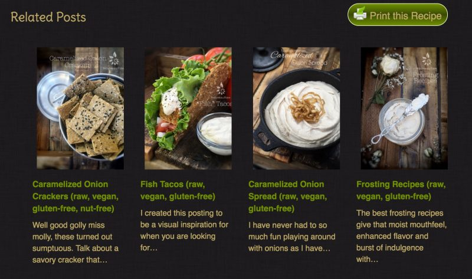
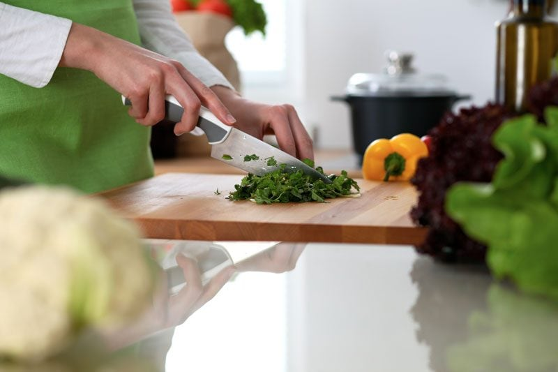

Nouveau Raw Upgrades
First of all my apologies if all the construction work around here at my site has been distracting. We have been busy beavers behind the scenes… continually working to make the NouveauRaw experience even more pleasurable. How is that possible? I know, right?! I feel it is important and exciting to share with you everything that we have been and are currently doing. So here goes.
FAQ Page
We are so excited to share this new page with you. It is located at the top of main menu bar of NouveauRaw, and it’s called, FAQ (frequently asked questions). Or you can click (here) to quickly view it now. Within it we created three different sections.
#1 – Membership. If you ever have any membership questions or issues, please look there first. If you don’t find answers to your questions there, then please shoot us an email: [email protected].
#2 – Recipe questions. I created these based off of the most common questions I am asked. In this case if you don’t find the answers to the questions you have there, please leave your recipe question in the comment section at the bottom of the recipe that you are working on.
#3 – The Raw Food Diet questions. For those of you who are new to the raw food diet, I have touched base on the most common questions that I get, so please look and read through them. I can see this section growing over time so please refer back to this page before sending emails. Don’t get me wrong, I love hearing from you, but your answer just might be found here and may save all of us some time.
A Better Delivery System for Nouveau Raw
In the past NouveauRaw experienced some creepy-crawly-load-times. For those of you who have been around for while, you most certainly have experienced that condition. To help increase the speed of the site, we installed what is called a content delivery network (CDN). So what this means is, that instead of NouveauRaw being hosted on just one server in one place of the country, now multiple copies of the NouveauRaw site are now hosted on different servers all around the country.
That way, when a you are loading one of our recipe pages your browser can get that information from the closest server to you. It’s kind of like going to the local convenience store to buy an apple instead of driving all the way into town to the grocery store. What does this mean to you? Faster load times! This has sped up my site considerably, making your experience that much more enjoyable.
Server Upgrade
Back on February 22nd, we shut the site down for a few hours so that we could upgrade our servers and the software that runs on them. This brought us up to the current version of several different programs which improved security and stability. But not only that, it too increased the browsing speed of the whole site. I don’t know if this excites you but it sure made me wiggle with joy.
Plugins
As I already said, for quite a while the site speed had been on the slow side. Along with the upgrades mentioned above, we found that a few of the feature plugins that we had been using were really taxing the system. So we turned almost all of them off until we could either replace, upgrade or fix the conflicts. All seems to be well now. :)
Related Posts
We also discovered through a long process, that the “related posts” plugin was part of the creeping problem. This feature was found at the bottom of each recipe, where it listed other recipes or techniques that were relatable to the recipe that you were looking at. I LOVED that feature but again, we had to turn it off until we found a better version. After much research and testing, we found one! So they are back. They might look a little different then the old ones (if you remember) but they are great. Be sure to check them out because they just might spark some inspiration.

Amazon Store
Some of you noticed that the Amazon store was “closed” for a few days too. Once we upgraded the system, the store plugin broke and we found out that the developer of that plugin had abandoned post and wasn’t offering technical help anymore. We have it working now, but are testing out a new system on our development site that is better supported. We should be rolling that out soon, until then though, the store is fully functioning for your shopping convenience.
More Ideas to Come
New Member Home Page
After sharing with you all the current changes that we have done recently, I also want to keep you in the loop of some of the other items that we are currently working on. We are in the process of designing a new “home page” for you, the member. The goal is to provide a page that you will always log into. It will display the last 3-4 recipes that have been released, it will also display the hottest trending recipes from the site, and all of your membership info will be found there. Oh, we are also wanting to add a section where you will get instant updates from me, Amie Sue. I think that’s pretty darn exciting!
New Forum
The other project that we are working on and testing out is a new forum format. We are seeking out one that is a bit more user friendly and inviting to use. My goal for the forum is to bring all of us together… one big happy family that help inspire, encourage, and support one another.
Chat Program!
And lastly, (at least for now) we are testing out a chat program! Now, this is my all time favorite feature. It will either be free-standing on the site or it will be tied into the forum. We are still working out that functionality. This will allow instant contact with me when I am on the computer.
Well, that about sums things up for now. I hope you enjoyed reading about all the wonderful things that we have been working on for you… Because it really is all about YOU! Creating a space for you to come learn, experience, enjoy, and relax. So, go slap on that apron and tighten those strings, we have some work to do in the kitchen! Have a blessed and happy day, amie sue

© AmieSue.com